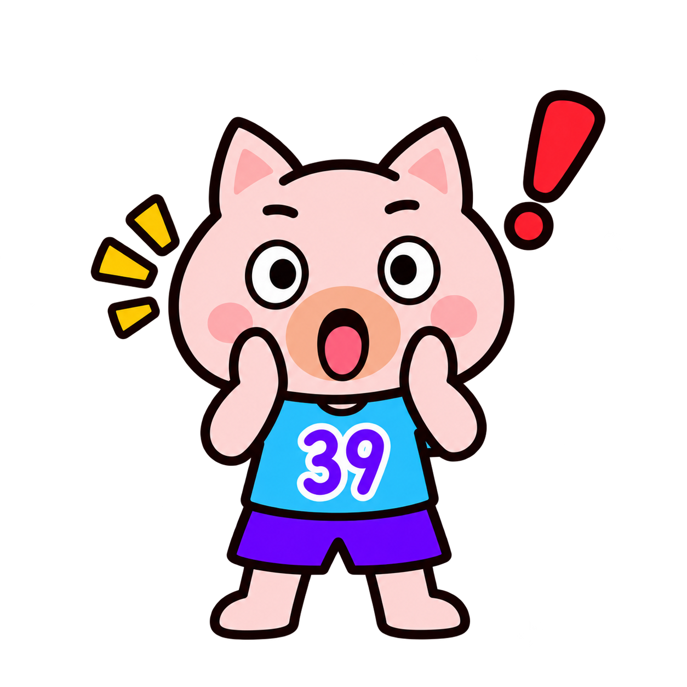
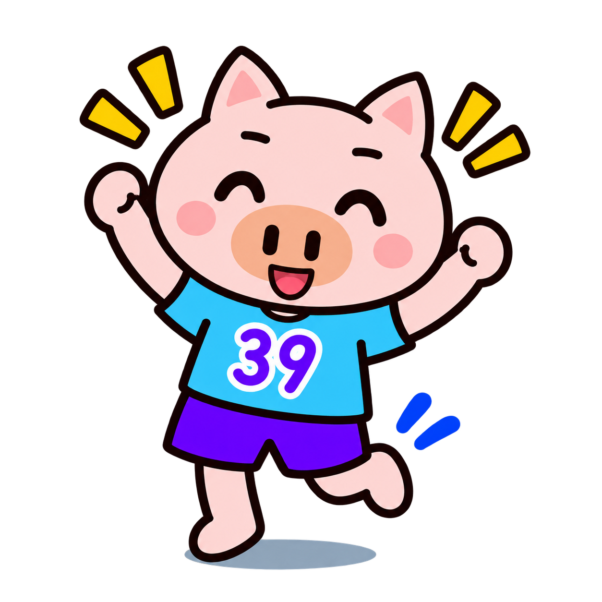

← お役立ち講座一覧へ戻る


ホームページ制作の基礎知識講座
この記事でわかること
- ホームページ制作の基本的な流れが分かります
- 制作を依頼する前に決めておきたいポイントが分かります
- よくある注意点と、公開後に気をつけたいことが分かります
ホームページ制作の基本的な流れ
福祉事業所がホームページを制作するときは、おおまかに「相談」「構成づくり」「デザイン」「公開」という流れで進みます。何を伝えたいホームページにするかを最初に決めておくと、その後の作業がスムーズになります。
ぶひおPOINT
まずは「誰に」「何を伝えたいか」を紙に書き出してみると、あとの打ち合わせがぐっとスムーズになるよ。
相談・ヒアリングの段階
この段階では、事業所の強みや利用者さんに伝えたいことを整理します。どんな方に見てもらいたいホームページなのかを最初にはっきりさせることが、後の工程をスムーズに進める一番のポイントです。
- 事業所の強みを3つ書き出す
- 見てほしい人（利用検討者・ご家族・採用希望者など）を決める
- 今困っていること・伝わっていないことを整理する
デザイン・構成づくりの段階
構成が決まったら、実際のデザインに進みます。ここでは写真や色使いが事業所の雰囲気を大きく左右します。
注意
公開直前にデザインを大きく変更すると、スケジュールが遅れる原因になります。構成の段階でしっかり確認しておきましょう。
公開後に気をつけたいこと
ホームページは公開して終わりではなく、公開してからが本当のスタートです。情報の更新や、問い合わせへの対応を続けることが大切です。

ぶひお注意
連絡先や空室状況など、変わりやすい情報は特に忘れずに更新しよう。
更新を続けるためのコツ
- 更新担当者をあらかじめ決めておく
- 更新しやすい仕組み（CMSなど）を選んでおく
- 月に1回など、見直すタイミングを決めておく

ぶひお
小さな更新でも、続けることで検索にも表示されやすくなっていくよ。
まとめ
ホームページ制作は、「相談」「構成づくり」「デザイン」「公開」という流れで進み、公開後の更新まで含めて初めて完成します。誰に何を伝えたいかを最初に整理することが、遠回りをしないための一番のポイントです。